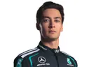
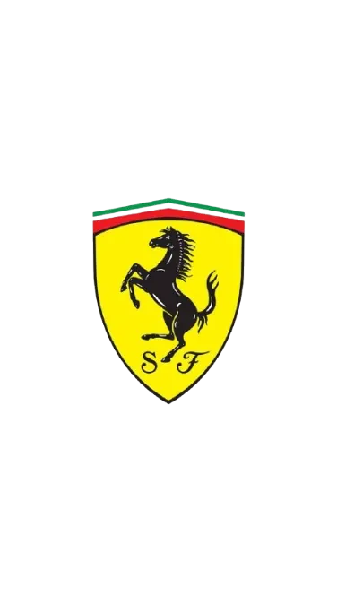
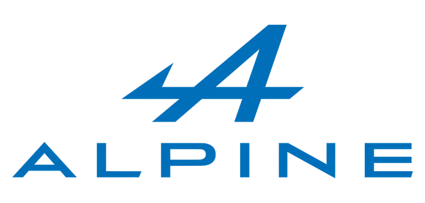
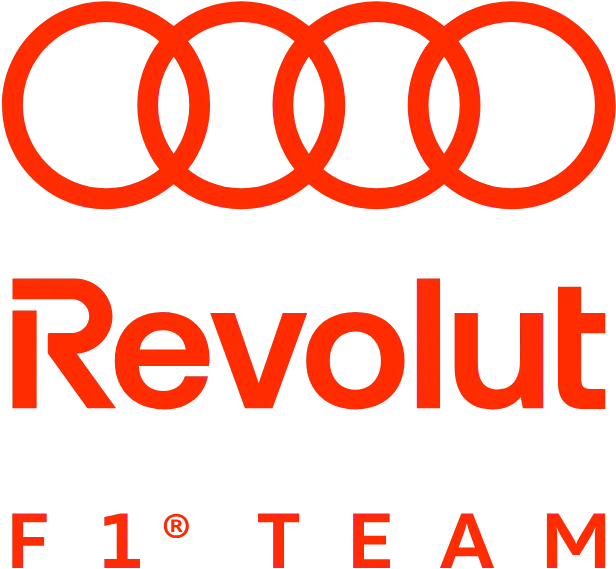

Parrilla de salida — última clasificación
Los cinco primeros clasificados de cara a la próxima carrera.
P1
Antonelli
Mercedes
P2
Norris
McLaren
P3

Russell
Mercedes
P4
Hamilton
Ferrari
P5
Leclerc
Ferrari
Campeonato de constructores 2026
Tras el GP de Países Bajos (ronda 12 de 23). Mercedes domina con 87 puntos de ventaja sobre Ferrari.
Mercedes — 425 pts

Ferrari — 338 ptsMcLaren — 263 pts
Red Bull — 186 pts
Williams
Aston Martin
Racing Bulls

AlpineHaas

Audi (Sauber)Cadillac